Change analysis for Kenya for PRIMAP-hist v2.5.1_final compared to
v2.5_final
Overview over
emissions by sector and gas
The following figures show the aggregate national total emissions
excluding LULUCF AR6GWP100 for the country reported priority scenario.
The dotted linesshow the v2.5_final data.
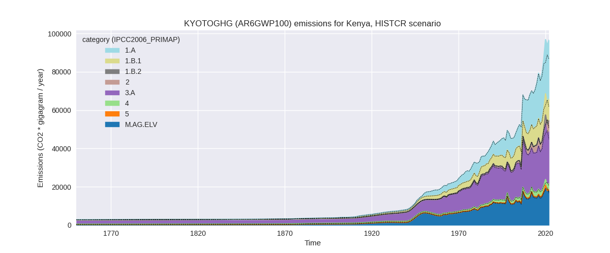
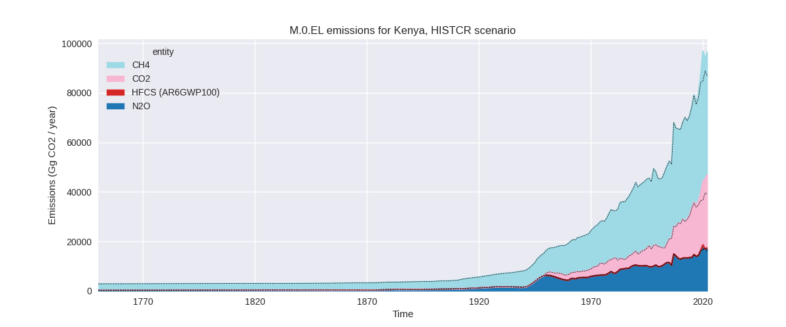
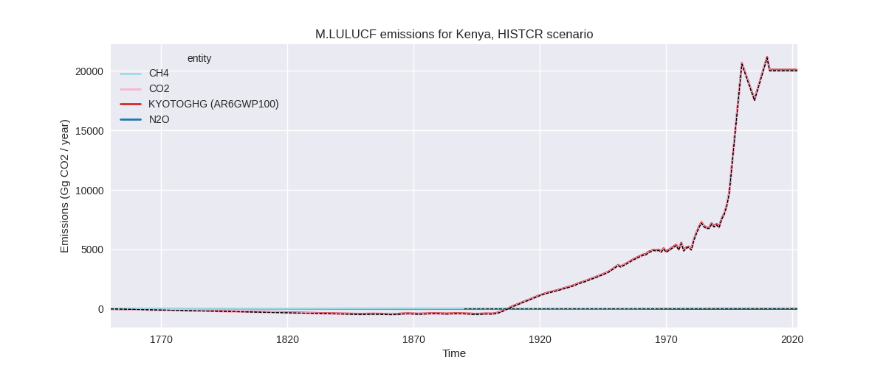
The following figures show the aggregate national total emissions
excluding LULUCF AR6GWP100 for the third party priority scenario. The
dotted linesshow the v2.5_final data.
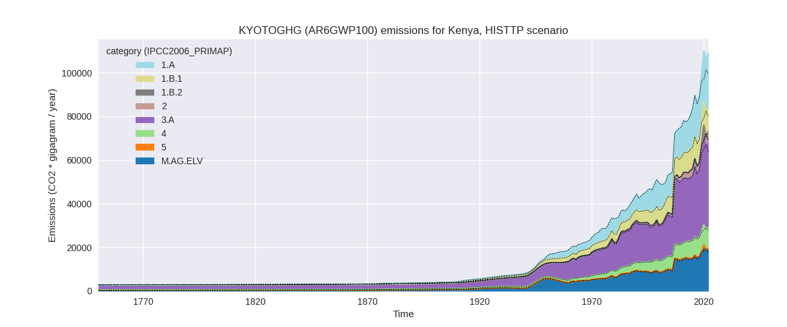
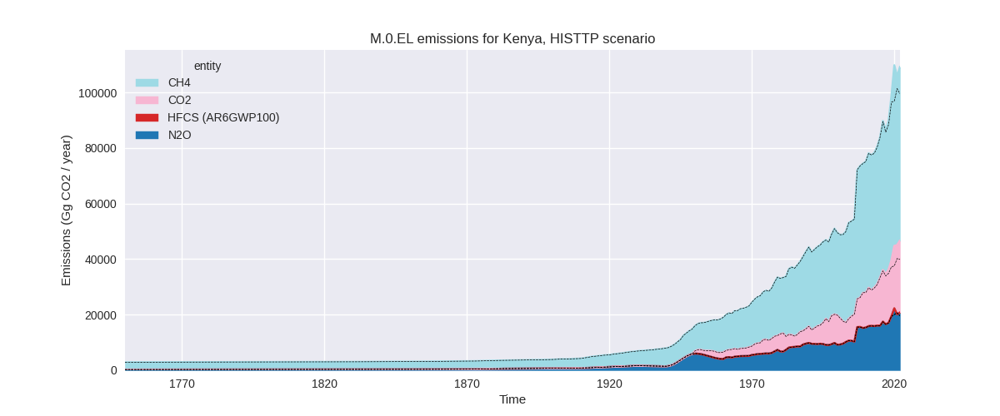
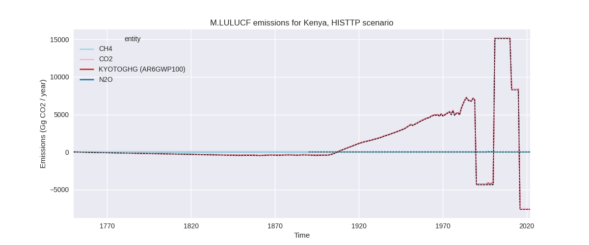
Overview over changes
In the country reported priority scenario we have the following
changes for aggregate Kyoto GHG and national total emissions excluding
LULUCF (M.0.EL):
- Emissions in 2022 have changed by 11.6%% (10042.07 Gg CO2 / year)
- Emissions in 1990-2022 have changed by 1.7%% (994.19 Gg CO2 / year)
In the third party priority scenario we have the following changes
for aggregate Kyoto GHG and national total emissions excluding LULUCF
(M.0.EL):
- Emissions in 2022 have changed by 9.8%% (9794.68 Gg CO2 / year)
- Emissions in 1990-2022 have changed by 1.5%% (977.37 Gg CO2 / year)
Most
important changes per scenario and time frame
In the country reported priority scenario the
following sector-gas combinations have the highest absolute impact on
national total KyotoGHG (AR6GWP100) emissions in 2022
(top 5):
- 1: 1.A, CO2 with 6258.28 Gg CO2 / year (36.5%)
- 2: 3.A, CH4 with 2907.79 Gg CO2 / year (12.2%)
- 3: M.AG.ELV, N2O with 1372.27 Gg CO2 / year (10.5%)
- 4: M.AG.ELV, CH4 with -433.46 Gg CO2 / year (-12.1%)
- 5: 1.A, CH4 with -237.16 Gg CO2 / year (-3.5%)
In the country reported priority scenario the
following sector-gas combinations have the highest absolute impact on
national total KyotoGHG (AR6GWP100) emissions in
1990-2022 (top 5):
- 1: 1.A, CO2 with 709.05 Gg CO2 / year (7.1%)
- 2: 3.A, CH4 with 153.13 Gg CO2 / year (0.8%)
- 3: M.AG.ELV, N2O with 74.89 Gg CO2 / year (0.7%)
- 4: M.AG.ELV, CO2 with 57.92 Gg CO2 / year (112.7%)
- 5: 1.B.1, CH4 with 51.38 Gg CO2 / year (0.7%)
In the third party priority scenario the following
sector-gas combinations have the highest absolute impact on national
total KyotoGHG (AR6GWP100) emissions in 2022 (top
5):
- 1: 1.A, CO2 with 5496.16 Gg CO2 / year (36.5%)
- 2: 3.A, CH4 with 2917.71 Gg CO2 / year (8.2%)
- 3: M.AG.ELV, N2O with 1218.79 Gg CO2 / year (7.1%)
- 4: M.AG.ELV, CO2 with 223.03 Gg CO2 / year (363.8%)
- 5: 2, CO2 with -53.11 Gg CO2 / year (-1.0%)
In the third party priority scenario the following
sector-gas combinations have the highest absolute impact on national
total KyotoGHG (AR6GWP100) emissions in 1990-2022 (top
5):
- 1: 1.A, CO2 with 622.71 Gg CO2 / year (6.5%)
- 2: 3.A, CH4 with 181.63 Gg CO2 / year (0.8%)
- 3: M.AG.ELV, N2O with 79.09 Gg CO2 / year (0.7%)
- 4: M.AG.ELV, CO2 with 57.92 Gg CO2 / year (112.7%)
- 5: 1.B.1, CH4 with 51.38 Gg CO2 / year (0.7%)
Notes on data changes
Here we list notes explaining important emissions changes for the
country. ’' means that the following text only applies to the TP time
series, while means that it only applies to the CR scenario. Otherwise
the note applies to both scenarios.
- 1.A, CO2: CDIAC 2023 shows a persistent growth of
emissions after 2017 while the EI data used in v2.5 shows declining
emissions in 2019 and 2020. This leads to higher 2022 and cumulative
emissions in PRIMAP-hist v2.5.1
- 3.A, CH4: FAO emissions have changed for 2022 and
2021 data have been added. This leads to emissions changes for 2020 -
2022. The impact on cumulative emissions is small.
- M.AG.ELV, N2O: FAO emissions have changed for 2022
and 2021 data have been added. This leads to emissions changes for 2020
- 2022. The impact on cumulative emissions is small.
- M.AG.ELV, CO2: Data are sourced from EDGAR. EDGAR
8.0 emissions are much higher than EDGAR 7.0 leading to much higher
emissions in PRIMAP-hist v2.5.1. While the relative changes are high,
the absolute impact on national total emissions is small.
Changes by sector and gas
For each scenario and time frame the changes are displayed for all
individual sectors and all individual gases. In the sector plot we use
aggregate Kyoto GHGs in AR6GWP100. In the gas plot we usenational total
emissions without LULUCF. ## country reported scenario
2022
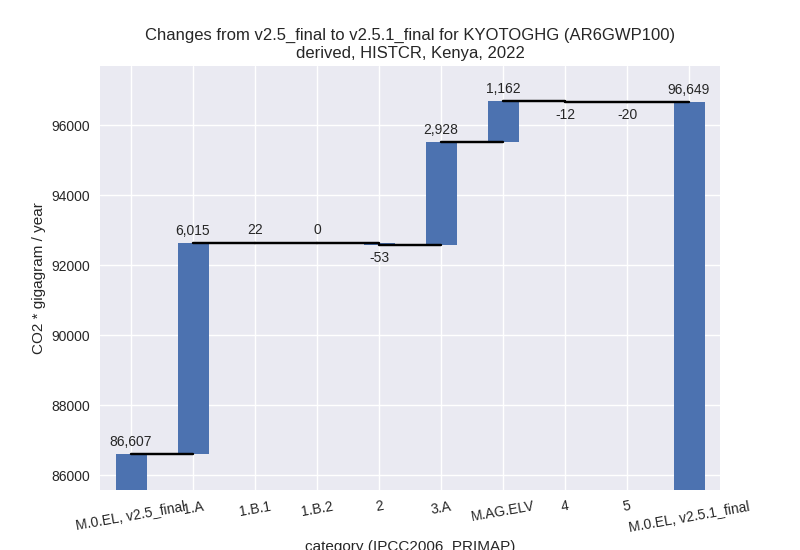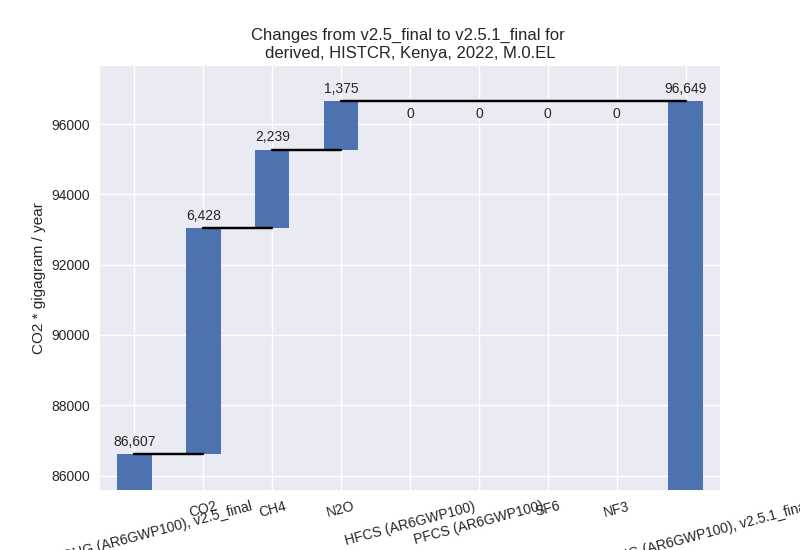
1990-2022
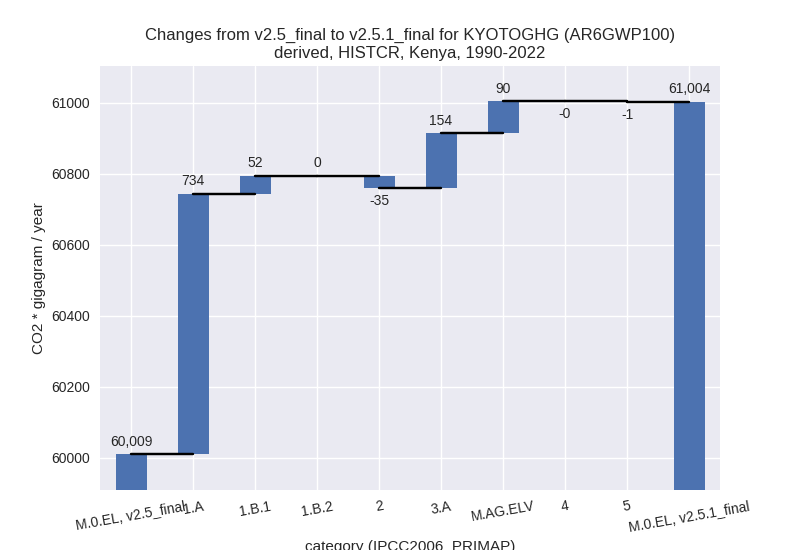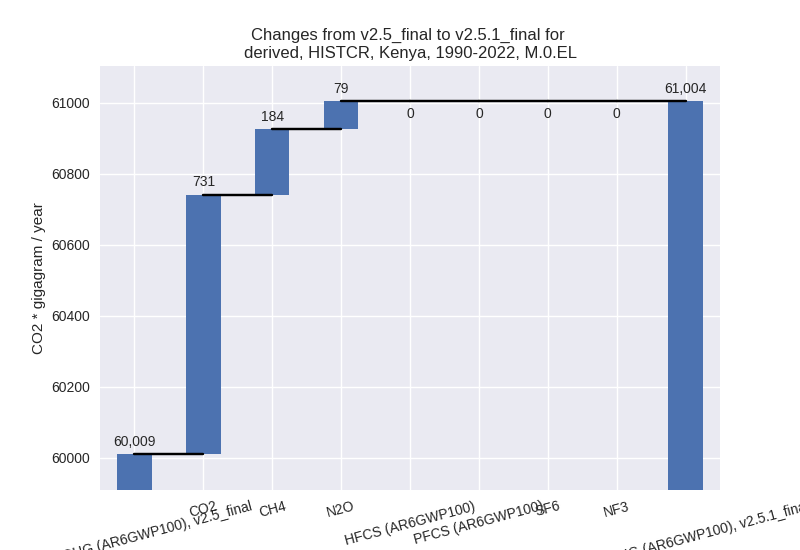
third party scenario
2022
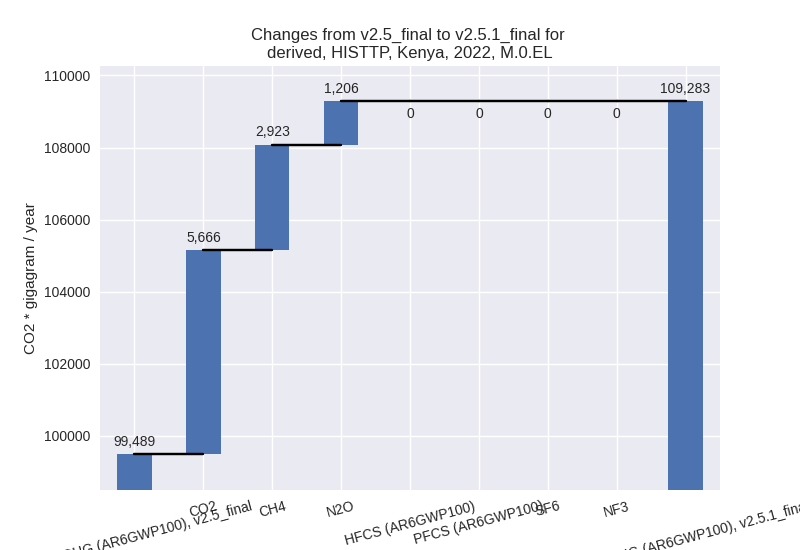
1990-2022
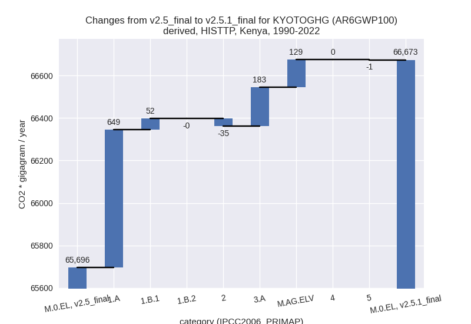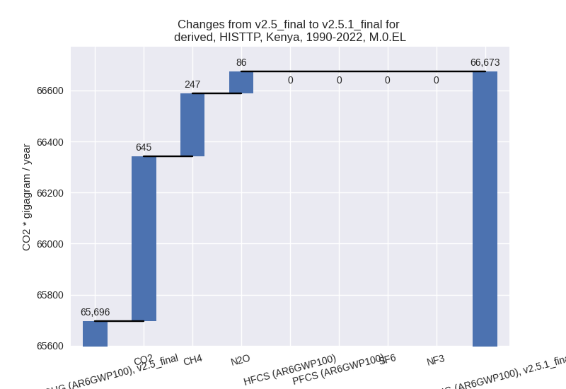
Detailed changes for the
scenarios:
country reported scenario
(HISTCR):
Most important changes
per time frame
For 2022 the following sector-gas combinations have
the highest absolute impact on national total KyotoGHG (AR6GWP100)
emissions in 2022 (top 5):
- 1: 1.A, CO2 with 6258.28 Gg CO2 / year (36.5%)
- 2: 3.A, CH4 with 2907.79 Gg CO2 / year (12.2%)
- 3: M.AG.ELV, N2O with 1372.27 Gg CO2 / year (10.5%)
- 4: M.AG.ELV, CH4 with -433.46 Gg CO2 / year (-12.1%)
- 5: 1.A, CH4 with -237.16 Gg CO2 / year (-3.5%)
For 1990-2022 the following sector-gas combinations
have the highest absolute impact on national total KyotoGHG (AR6GWP100)
emissions in 1990-2022 (top 5):
- 1: 1.A, CO2 with 709.05 Gg CO2 / year (7.1%)
- 2: 3.A, CH4 with 153.13 Gg CO2 / year (0.8%)
- 3: M.AG.ELV, N2O with 74.89 Gg CO2 / year (0.7%)
- 4: M.AG.ELV, CO2 with 57.92 Gg CO2 / year (112.7%)
- 5: 1.B.1, CH4 with 51.38 Gg CO2 / year (0.7%)
Changes in the main sectors for aggregate KyotoGHG (AR6GWP100)
are
- 1: Total sectoral emissions in 2022 are 41965.93 Gg
CO2 / year which is 43.4% of M.0.EL emissions. 2022 Emissions have
changed by 16.8% (6037.00 Gg CO2 /
year). 1990-2022 Emissions have changed by 3.5% (785.90 Gg CO2 / year). For 2022 the
changes per gas
are:
For 1990-2022 the changes per gas
are:
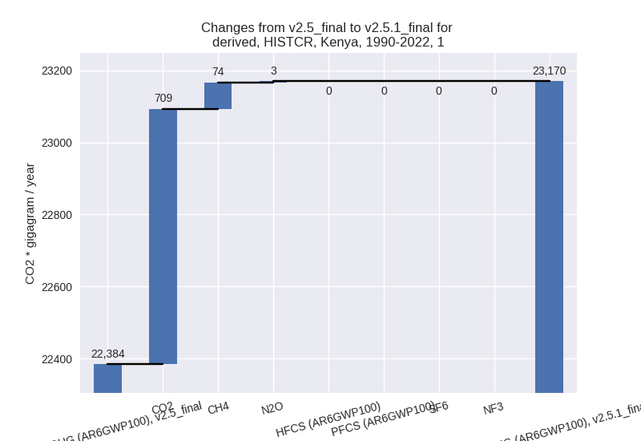
The changes come from the following subsectors:
- 1.A: Total sectoral emissions in 2022 are 30883.62
Gg CO2 / year which is 73.6% of category 1 emissions. 2022 Emissions
have changed by 24.2% (6015.47 Gg
CO2 / year). 1990-2022 Emissions have changed by 5.1% (733.85 Gg CO2 / year). For 2022 the
changes per gas
are:
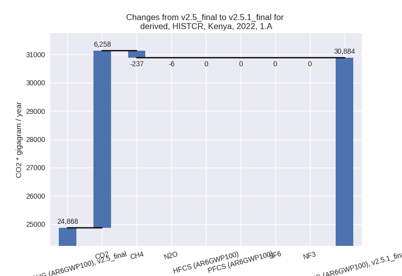
For 1990-2022 the changes per gas
are:
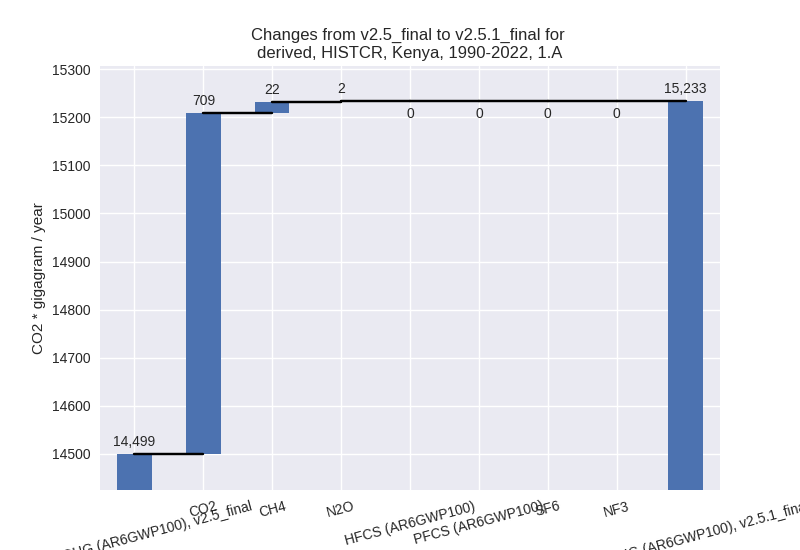
There is no subsector information available in PRIMAP-hist.
- 1.B.1: Total sectoral emissions in 2022 are
11081.76 Gg CO2 / year which is 26.4% of category 1 emissions. 2022
Emissions have changed by 0.2%
(21.53 Gg CO2 / year). 1990-2022 Emissions have changed by 0.7% (52.06 Gg CO2 / year).
- 1.B.2: Total sectoral emissions in 2022 are 0.55 Gg
CO2 / year which is 0.0% of category 1 emissions. 2022 Emissions have
changed by 0.0% (0.00 Gg CO2 /
year). 1990-2022 Emissions have changed by 0.0% (0.00 Gg CO2 / year).
- 2: Total sectoral emissions in 2022 are 5955.16 Gg
CO2 / year which is 6.2% of M.0.EL emissions. 2022 Emissions have
changed by -0.9% (-53.11 Gg CO2 /
year). 1990-2022 Emissions have changed by -1.5% (-35.48 Gg CO2 / year).
- M.AG: Total sectoral emissions in 2022 are 44920.30
Gg CO2 / year which is 46.5% of M.0.EL emissions. 2022 Emissions have
changed by 10.0% (4090.22 Gg CO2 /
year). 1990-2022 Emissions have changed by 0.7% (244.74 Gg CO2 / year). For 2022 the
changes per gas
are:
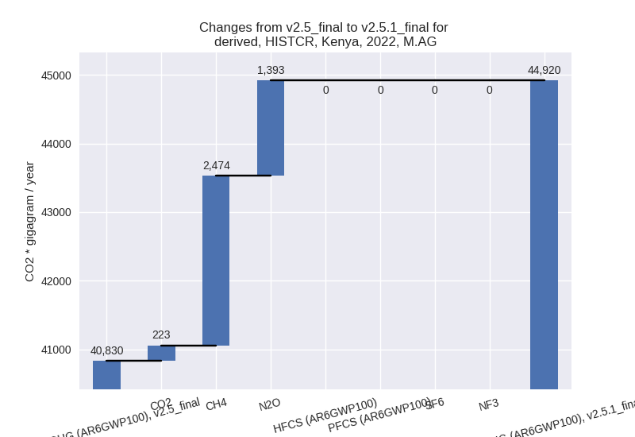
The changes come from the following subsectors:
- 3.A: Total sectoral emissions in 2022 are 27015.42
Gg CO2 / year which is 60.1% of category M.AG emissions. 2022 Emissions
have changed by 12.2% (2928.37 Gg
CO2 / year). 1990-2022 Emissions have changed by 0.8% (154.49 Gg CO2 / year). For 2022 the
changes per gas
are:
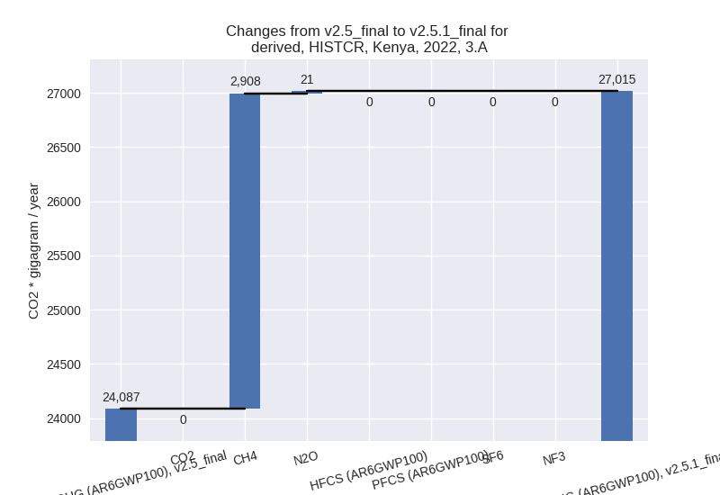
There is no subsector information available in PRIMAP-hist.
- M.AG.ELV: Total sectoral emissions in 2022 are
17904.88 Gg CO2 / year which is 39.9% of category M.AG emissions. 2022
Emissions have changed by 6.9%
(1161.85 Gg CO2 / year). 1990-2022 Emissions have changed by 0.7% (90.25 Gg CO2 / year). For 2022 the
changes per gas
are:
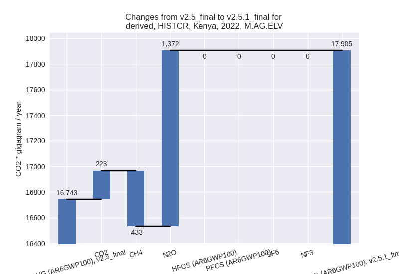
There is no subsector information available in PRIMAP-hist.
- 4: Total sectoral emissions in 2022 are 3088.41 Gg
CO2 / year which is 3.2% of M.0.EL emissions. 2022 Emissions have
changed by -0.4% (-12.34 Gg CO2 /
year). 1990-2022 Emissions have changed by -0.0% (-0.37 Gg CO2 / year).
- 5: Total sectoral emissions in 2022 are 719.38 Gg
CO2 / year which is 0.7% of M.0.EL emissions. 2022 Emissions have
changed by -2.7% (-19.71 Gg CO2 /
year). 1990-2022 Emissions have changed by -0.1% (-0.60 Gg CO2 / year). For 2022 the
changes per gas
are:
third party scenario (HISTTP):
Most important changes
per time frame
For 2022 the following sector-gas combinations have
the highest absolute impact on national total KyotoGHG (AR6GWP100)
emissions in 2022 (top 5):
- 1: 1.A, CO2 with 5496.16 Gg CO2 / year (36.5%)
- 2: 3.A, CH4 with 2917.71 Gg CO2 / year (8.2%)
- 3: M.AG.ELV, N2O with 1218.79 Gg CO2 / year (7.1%)
- 4: M.AG.ELV, CO2 with 223.03 Gg CO2 / year (363.8%)
- 5: 2, CO2 with -53.11 Gg CO2 / year (-1.0%)
For 1990-2022 the following sector-gas combinations
have the highest absolute impact on national total KyotoGHG (AR6GWP100)
emissions in 1990-2022 (top 5):
- 1: 1.A, CO2 with 622.71 Gg CO2 / year (6.5%)
- 2: 3.A, CH4 with 181.63 Gg CO2 / year (0.8%)
- 3: M.AG.ELV, N2O with 79.09 Gg CO2 / year (0.7%)
- 4: M.AG.ELV, CO2 with 57.92 Gg CO2 / year (112.7%)
- 5: 1.B.1, CH4 with 51.38 Gg CO2 / year (0.7%)
Changes in the main sectors for aggregate KyotoGHG (AR6GWP100)
are
- 1: Total sectoral emissions in 2022 are 36303.26 Gg
CO2 / year which is 33.2% of M.0.EL emissions. 2022 Emissions have
changed by 17.9% (5523.29 Gg CO2 /
year). 1990-2022 Emissions have changed by 3.4% (700.99 Gg CO2 / year). For 2022 the
changes per gas
are:
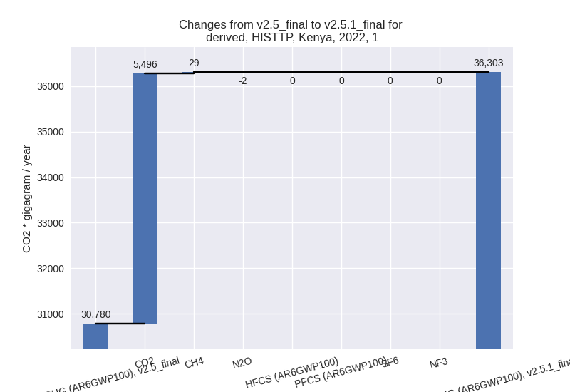
For 1990-2022 the changes per gas
are:
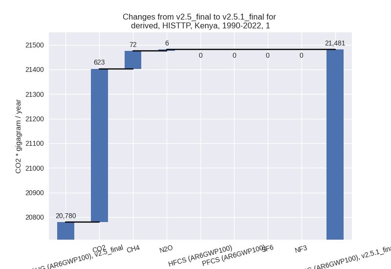
The changes come from the following subsectors:
- 1.A: Total sectoral emissions in 2022 are 25215.81
Gg CO2 / year which is 69.5% of category 1 emissions. 2022 Emissions
have changed by 27.9% (5501.76 Gg
CO2 / year). 1990-2022 Emissions have changed by 5.0% (648.94 Gg CO2 / year). For 2022 the
changes per gas
are:
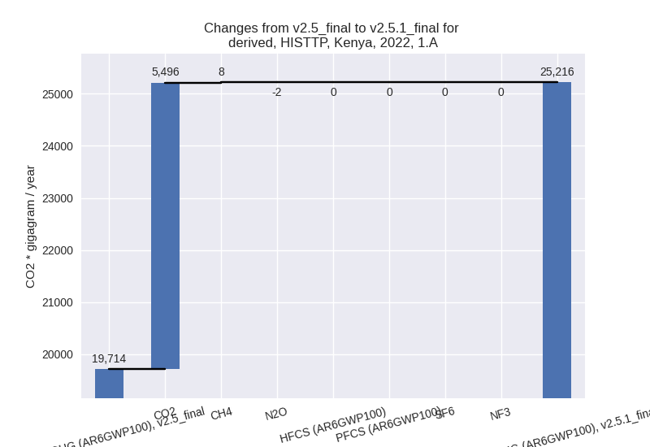
For 1990-2022 the changes per gas
are:
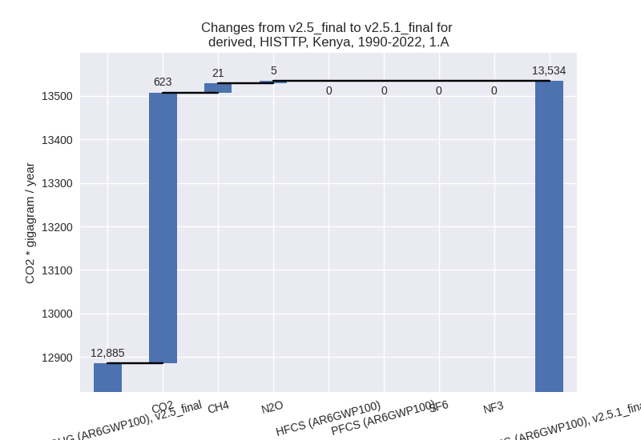
There is no subsector information available in PRIMAP-hist.
- 1.B.1: Total sectoral emissions in 2022 are
11081.76 Gg CO2 / year which is 30.5% of category 1 emissions. 2022
Emissions have changed by 0.2%
(21.53 Gg CO2 / year). 1990-2022 Emissions have changed by 0.7% (52.06 Gg CO2 / year).
- 1.B.2: Total sectoral emissions in 2022 are 5.69 Gg
CO2 / year which is 0.0% of category 1 emissions. 2022 Emissions have
changed by 0.0% (0.00 Gg CO2 /
year). 1990-2022 Emissions have changed by -0.0% (-0.00 Gg CO2 / year).
- 2: Total sectoral emissions in 2022 are 5224.30 Gg
CO2 / year which is 4.8% of M.0.EL emissions. 2022 Emissions have
changed by -1.0% (-53.11 Gg CO2 /
year). 1990-2022 Emissions have changed by -1.8% (-35.48 Gg CO2 / year).
- M.AG: Total sectoral emissions in 2022 are 57487.54
Gg CO2 / year which is 52.6% of M.0.EL emissions. 2022 Emissions have
changed by 8.1% (4331.54 Gg CO2 /
year). 1990-2022 Emissions have changed by 0.9% (312.07 Gg CO2 / year). For 2022 the
changes per gas
are:
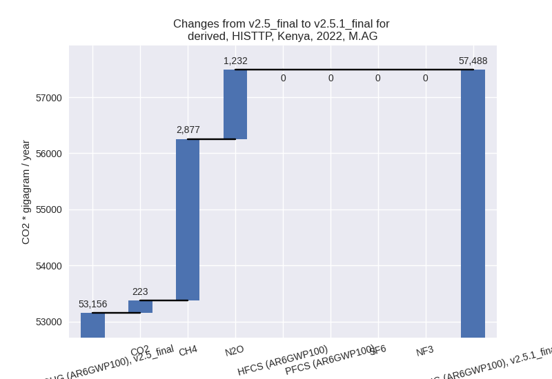
The changes come from the following subsectors:
- 3.A: Total sectoral emissions in 2022 are 38552.20
Gg CO2 / year which is 67.1% of category M.AG emissions. 2022 Emissions
have changed by 8.2% (2930.82 Gg CO2
/ year). 1990-2022 Emissions have changed by 0.8% (182.64 Gg CO2 / year). For 2022 the
changes per gas
are:
There is no subsector information available in PRIMAP-hist.
- M.AG.ELV: Total sectoral emissions in 2022 are
18935.34 Gg CO2 / year which is 32.9% of category M.AG emissions. 2022
Emissions have changed by 8.0%
(1400.72 Gg CO2 / year). 1990-2022 Emissions have changed by 1.1% (129.43 Gg CO2 / year). For 2022 the
changes per gas
are:
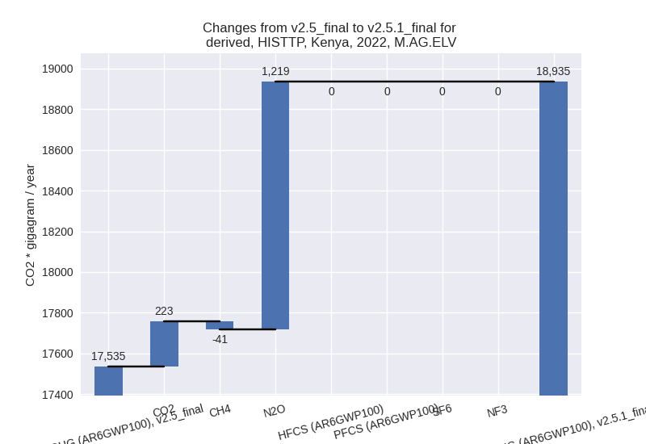
There is no subsector information available in PRIMAP-hist.
- 4: Total sectoral emissions in 2022 are 9548.84 Gg
CO2 / year which is 8.7% of M.0.EL emissions. 2022 Emissions have
changed by 0.1% (12.68 Gg CO2 /
year). 1990-2022 Emissions have changed by 0.0% (0.38 Gg CO2 / year).
- 5: Total sectoral emissions in 2022 are 719.38 Gg
CO2 / year which is 0.7% of M.0.EL emissions. 2022 Emissions have
changed by -2.7% (-19.71 Gg CO2 /
year). 1990-2022 Emissions have changed by -0.1% (-0.60 Gg CO2 / year). For 2022 the
changes per gas
are:
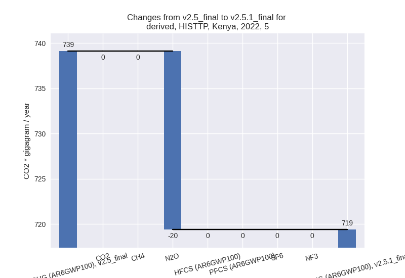